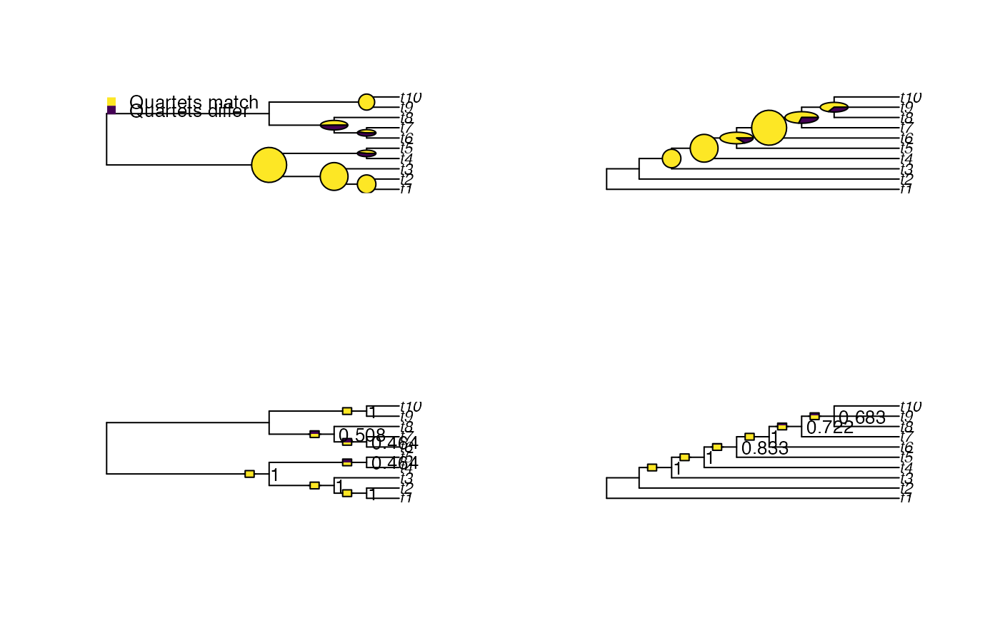
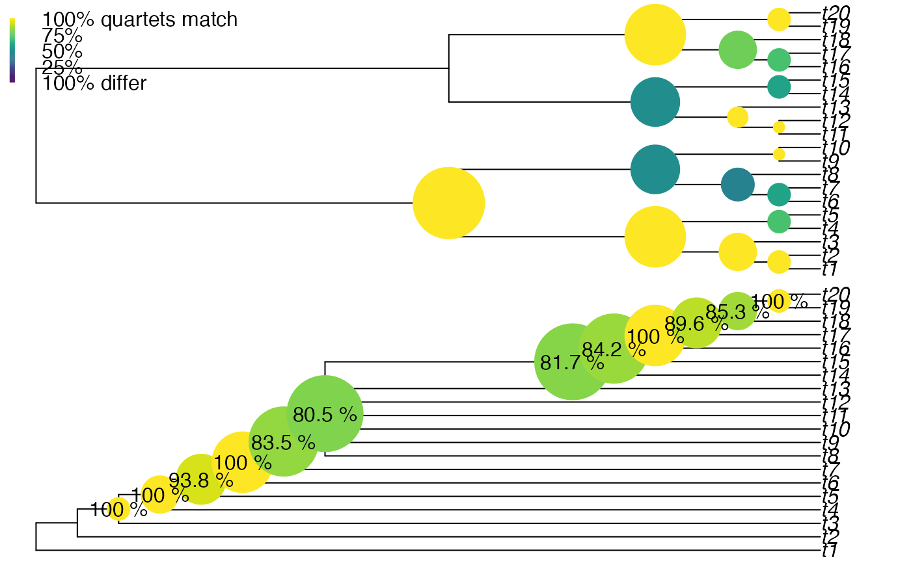

Visualize quartet difference on trees, by split
Usage
VisualizeQuartets(
tree1,
tree2,
style = "pie",
setPar = TRUE,
precision = 3L,
Plot = plot.phylo,
scale = 1L,
spectrum = viridisLite::viridis(101),
legend = TRUE,
...
)Arguments
- tree1, tree2
Trees of class
phylo, with identical leaf labels.- style
Character string specifying split labels with an unambiguous abbreviation of:
label: Label stating proportion of resolved quartets in agreement, coloured accordingly;pie: Pie chart showing proportion of quartets in agreement, sized according to number of quartets influenced by each split;bar: Bar showing proportion of quartets in agreement, labelled;size: Circle coloured according to proportion of quartets in agreement, with area corresponding to number of quartet statements associated with split.
- setPar
Logical specifying whether graphical parameters should be set to display trees side by side.
- precision
Integer specifying number of significant figures to display when reporting matching scores.
- Plot
Function to use to plot trees.
- scale
Numeric, enlargement factor for split labels.
- spectrum
101-element vector specifying a range of colours by which to colour matches.
- legend
Logical specifying whether to display simple legend.
- ...
Additional parameters to send to
Plot().
Value
VisualizeQuartets() invisibly returns a list with two elements,
named tree1 and tree2, containing a matrix.
Each row corresponds to a split within that tree; columns correspond to:
- node
The internal numbering of the node corresponding to each split, as displayed by
ape::nodelabels()- N, Q, s, d, r1, r2, u
The status of each quartet relative to that split, as documented in
QuartetStatus()- res
The number of quartets resolved by that split, i.e.
s+d- same
The proportion of quartets resolved by that node that are resolved in the same manner in the other tree; i.e.
s / s + d
Examples
library("TreeTools", quietly = TRUE)
# Simple plot
VisualizeQuartets(BalancedTree(10), CollapseNode(PectinateTree(10), 19),
style = "label")
# Plot with custom graphical parameters
origPar <- par(mfrow = c(2, 2))
VisualizeQuartets(BalancedTree(10), CollapseNode(PectinateTree(10), 19),
setPar = FALSE)
VisualizeQuartets(BalancedTree(10), CollapseNode(PectinateTree(10), 19),
style = "bar", legend = FALSE, setPar = FALSE)

# Circle size denotes similarity
par(mfrow = c(2, 1), mar = rep(0.1, 4))
vq <- VisualizeQuartets(
tree1 = BalancedTree(20),
tree2 = CollapseNode(PectinateTree(20), 29:33),
style = "size", scale = 2,
setPar = FALSE # necessary for node labels to align
)
# Manually add custom node labels
percentSame <- paste(round(vq[["tree2"]][, "same"] * 100, 1), "%")
nodelabels(percentSame, vq[["tree2"]][, "node"],
frame = "n", bg = NA, # No frame or background
adj = 0.5 # align label
)

# restore original graphical parameters
par(origPar)